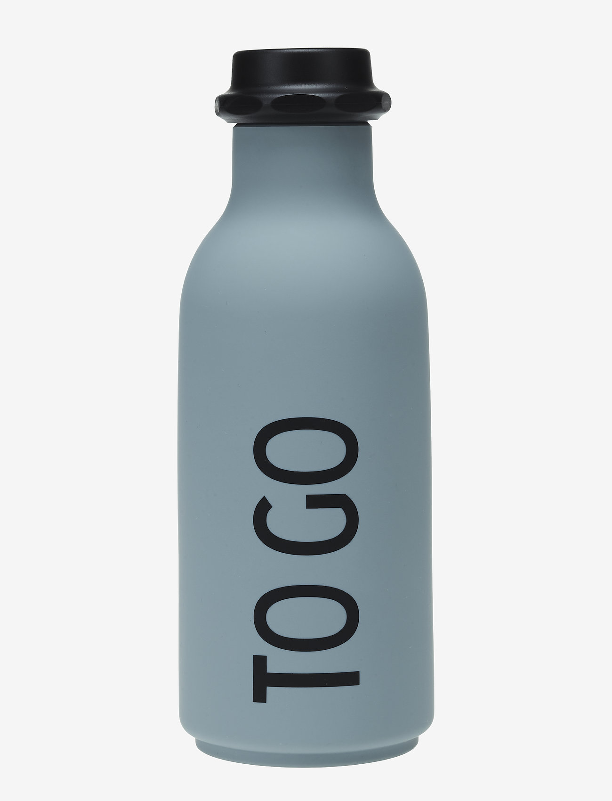

Case Study
1. Test Image

Output on Microsoft Azure -A close up of a bottle
Output on Mobilenet Model - Water bottle
Result -
Mobilenet Model ia more Accurate
2. Test Image
Output on Microsoft Azure -A dog wearing a neck tie
Output on Mobilenet Model - Pomeranian
Result -
Microsoft Azure is more Accurate
3. Test Image

Output on Microsoft Azure -A glass cup on a table
Output on Mobilenet Model -Eggnog
Result -
Mobilenet Model is more Accurate
4. Test Image

Output on Microsoft Azure -An apple sitting on a table
Output on Mobilenet Model -Croquet ball
Result -
Microsoft Azure is more Accurate
5. Test Image
Output on Microsoft Azure -A pair of sneakers
Output on Mobilenet Model -Running shoe
Result -
Microsoft Azure is more Accurate
I have tested 5 image
Microsoft Azure have predicted 3 of them correctly. And Mobilenet have predicted 2 of them correctly
So according to my case Microsoft Azure is more Accurate